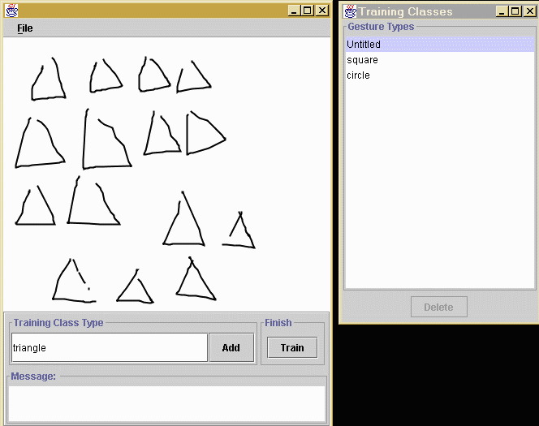

The trainer program allows users to create customized gestures for their applications. The user enters about 15-20 samples for each type of gesture that they want to train. For example, if one wants to train triangles, sketch a bunch of triangles in the editor (pictured above), enter "triangle" in the Training Class Type text box, and press Add. This will add the triangle samples to the training set. The tag "triangle" will show up in the Training Classes window. The user can save the training data in a file with ".tc" extension. The file can be loaded at a later time for modification.
The Training Classes window displays a list of gesture types that are currently in the training set. One can click on the label to view the set of samples for that gesture. A set of samples can be removed from the training set by selecting on the label and press Delete.
After the samples are entered, one can test the recognition by clicking the Train button. This will launch a sketch board which has a recognition engine embedded in it. The recognition engine trains on the samples and should now be able to classify a gesture according to what it has learned from the training data. The default confidence threshold is 80%, which means that if a gesture has been classified as a certain type with an 80% or greater confidence, it is recognized and its type is displayed next to its figure. If the confidence is below the threshold, the gesture is unrecognized. The confidence threshold can be adjusted using the slider on the bottom of the window.
Note
The gesture recognition in this application currently supports single-stroke gestures, which means that in order for a gesture to be recognized it has to be completed in one stroke (a path formed from pen down to pen up). Also the recognition is direction-dependent, therefore a gesture has to be drawn in the same way as it is trained. The lack of multi-stroke gestures and direction independence is not a shortcoming of the recognition archicture, but rather this particular recognizer implementation. See the package documentation for details.